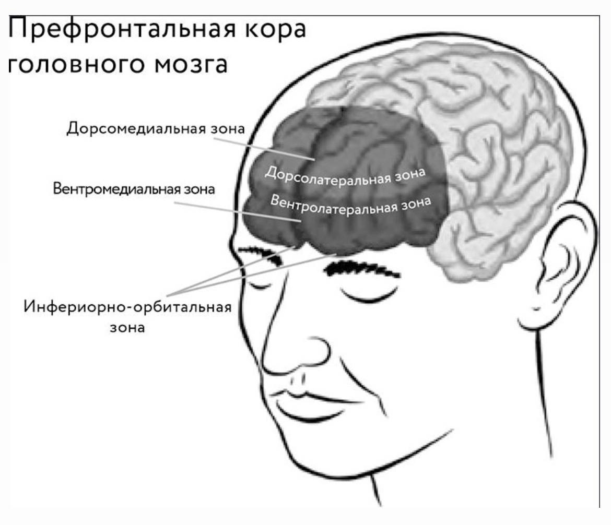
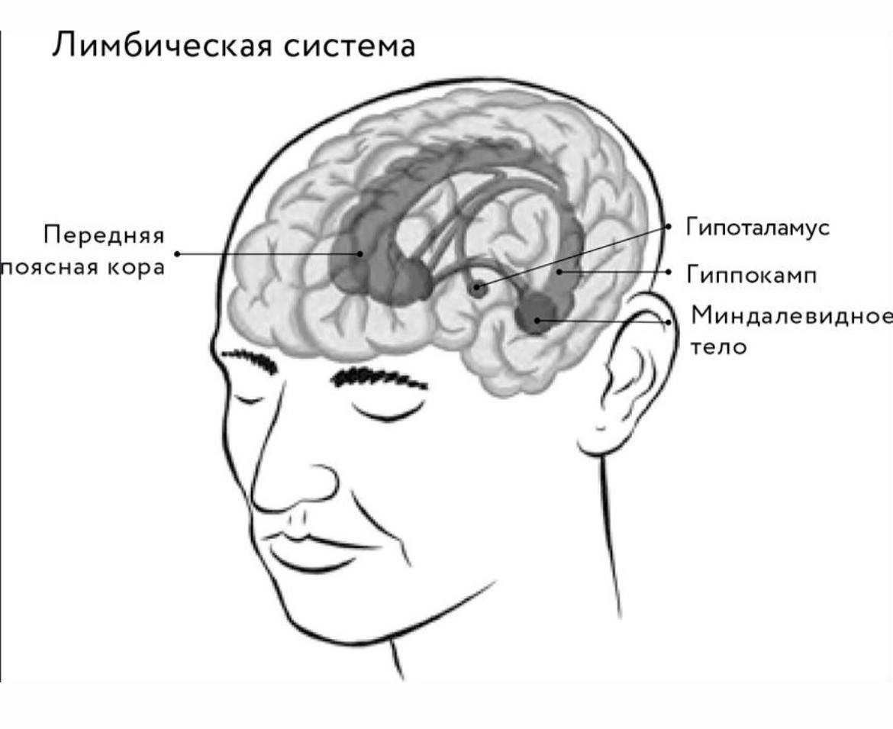

Нейрофизиология отношений

Нейрофизиология отношений
автор Антон Казаков
В тридевятом царстве, в тридесятом государстве жили-были люди, и выстраивали они друг с другом разные отношения. На словах выстраивали они их одним образом, а на деле — другим. В этом и была их основная беда, так как были они существами социальными и без отношений не могли жить. А как строить их правильно — не знали, хоть и было у них советчиков по отношениям и наук разных целый океан.
Как-то раз один умалишённый решил поисследовать, почему зубы у него болят, и наткнулся на то, что отношения свои неправильно он строил. Обернулся он на других людей и увидел, что был он в этом гиблом деле не один. Опечалился тот умалишённый и решил уму-разуму набраться в деле отношений. Он-то и рассказал мне эту историю.
Не слишком скучное вступление?
Как вы могли догадаться, эта история не про каких-то людей из далёких государств, а про нас — про всех, у кого есть мозг. Потому что он и отвечает за то, как мы выстраиваем отношения. И есть в нём две структуры: одна рассуждает о том, как правильно их выстраивать, а вторая выстраивает их так, как надо. Называются они префронтальная кора и лимбическая система, соответственно. Изучает всё это нейрофизиология — наука о мозге и биологических основах мыслей, чувств, действий.
Углубиться в эту науку меня сподвигло психостоматологическое исследование, в котором за проблемными зубами мы снова и снова находили деструктивные паттерны коммуникации, на которые мы никак не могли повлиять. В процессе изучения этих двух систем мозга я также плотно погрузился в исследование темы нарциссизма и техник коммуникации с лимбической системой. И вот что я узнал:
1️⃣ Префронтальная кора - та часть мозга, которая отвечает за рациональное мышление, логику и осознанные решения. Она активна в состоянии безопасности, спокойствия и помогает нам быть людьми.
Как-то раз один умалишённый решил поисследовать, почему зубы у него болят, и наткнулся на то, что отношения свои неправильно он строил. Обернулся он на других людей и увидел, что был он в этом гиблом деле не один. Опечалился тот умалишённый и решил уму-разуму набраться в деле отношений. Он-то и рассказал мне эту историю.
Не слишком скучное вступление?
Как вы могли догадаться, эта история не про каких-то людей из далёких государств, а про нас — про всех, у кого есть мозг. Потому что он и отвечает за то, как мы выстраиваем отношения. И есть в нём две структуры: одна рассуждает о том, как правильно их выстраивать, а вторая выстраивает их так, как надо. Называются они префронтальная кора и лимбическая система, соответственно. Изучает всё это нейрофизиология — наука о мозге и биологических основах мыслей, чувств, действий.
Углубиться в эту науку меня сподвигло психостоматологическое исследование, в котором за проблемными зубами мы снова и снова находили деструктивные паттерны коммуникации, на которые мы никак не могли повлиять. В процессе изучения этих двух систем мозга я также плотно погрузился в исследование темы нарциссизма и техник коммуникации с лимбической системой. И вот что я узнал:
1️⃣ Префронтальная кора - та часть мозга, которая отвечает за рациональное мышление, логику и осознанные решения. Она активна в состоянии безопасности, спокойствия и помогает нам быть людьми.

2️⃣ Лимбическая система - та древняя структура мозга, которая отвечает за эмоции и защитные реакции. Она активируется при ощущении угрозы и временно подавляет работу префронтальной коры, заменяя её режимом бей, беги, замри, угождай, объясняй/оправдывай. Она помнит любой болезненный опыт прошлого и защищает нас от него в настоящем. Она про безопасность и выживание любой ценой.

3️⃣ Угрозой извне может служить как голодный тигр или ядовитая змея, так и ноющий ребенок, слишком довольная улыбка мужа, интонация в голосе мамы или предложение психолога углубиться в какую-то определенную тему.
Если в древние времена болезненным опытом было то, что кого-то одного из племени съел тот самый голодный тигр, а второго искусала до смерти ядовитая змея, то теперь многое изменилось. В наше время основной опасностью является невыносимое ощущение собственной несостоятельности, которое, с одной стороны, наносит удар по нашей самооценке, а с другой — напоминает нашей древней лимбической системе, что в далёкие времена всех несостоятельных из племени выгоняли на съедение голодным змеям и ядовитым тиграм.
4️⃣ Поведение других людей, которое говорит нам о том, что мы недостаточно хорошие, значимые, умные, сильные, нужные и страдающие - это угроза №1 для современного человека. Малейший намек на возможность столкнуться со своей недостаточностью вызывает моментальное включение реакций лимбической системы в виде простых инстинктов: бей, замри, беги, угождай, объясняй/оправдывай. Так мы стремимся обеспечить свою безопасность.
Предлагаю сделать небольшой вывод 👇 и чуть больше раскрыть эту тему через три замечательных исследования природы человека.
Если в древние времена болезненным опытом было то, что кого-то одного из племени съел тот самый голодный тигр, а второго искусала до смерти ядовитая змея, то теперь многое изменилось. В наше время основной опасностью является невыносимое ощущение собственной несостоятельности, которое, с одной стороны, наносит удар по нашей самооценке, а с другой — напоминает нашей древней лимбической системе, что в далёкие времена всех несостоятельных из племени выгоняли на съедение голодным змеям и ядовитым тиграм.
4️⃣ Поведение других людей, которое говорит нам о том, что мы недостаточно хорошие, значимые, умные, сильные, нужные и страдающие - это угроза №1 для современного человека. Малейший намек на возможность столкнуться со своей недостаточностью вызывает моментальное включение реакций лимбической системы в виде простых инстинктов: бей, замри, беги, угождай, объясняй/оправдывай. Так мы стремимся обеспечить свою безопасность.
Предлагаю сделать небольшой вывод 👇 и чуть больше раскрыть эту тему через три замечательных исследования природы человека.
Небольшой вывод: В стрессовой ситуации наша древняя лимбическая система берет верх над рациональным мышлением, даже если реальной угрозы нет. В стрессовой коммуникации она же берет верх над тем, как мы выстраиваем коммуникацию.
Почему мы боимся быть несовершенными: три ключа к пониманию
Леон Фестингер, Стенли Милгрэм и Филип Зимбардо — слышали о таких? Первый подарил миру теорию когнитивного диссонанса, второй экспериментально доказал нашу безответственность друг перед другом, третий рассказал о разрушительной силе оправдывающей идеологии. Но давайте обо всём по порядку..
Первое. Человеку жизненно необходимо поддерживать выгодные убеждения о себе. И поэтому мы всеми силами будем оправдывать свои поступки, которые не соответствуют нашим убеждениям о себе. Подробнее об этом можно найти в теории когнитивного диссонанса Фестингера. Басня Эзопа про Лисицу и виноград идеально описывает этот концепт. Она будет в конце статьи.
Второе. У человека есть чрезвычайно сильно выраженная готовность делать всё что угодно, следуя указаниям авторитета. Об этом можете прочитать у Стенли Милгрэма или посмотреть фильм "Экспериментатор". А лучше посмотрите эксперимент Деррена Брауна. Я специально выложил его для вас на облаке. Здесь же я позволю себе наглость и назову нашу лимбическую систему тем самым авторитетом, который руководит нами в стрессовой коммуникации. И за ней мы до последнего готовы следовать в то время, пока наша префронтальная кора, отвечающая за нашу человечность, находится в “выключенном” состоянии.
Третье. Человек потрясающе одарен навыком впитывать любую идею, которая поддерживается обществом и может оправдывать его поступки. За это открытие можно поблагодарить Филипа Зимбардо и его Стэнфордский тюремный эксперимент. Про него, кстати, тоже есть фильм. Но и эксперименты Аша я бы не стал обходить стороной. Почитайте и про них.
Таким образом мы получаем три восхитительных элемента человеческой природы:
И перед тем как мы перейдем непосредственно к жизненным примерам тех отношений, которые стоят за проблемами в зубах и челюсти, я затрону ещё два важных момента касательно реакций лимбической системы. Именно по этим поведенческим реакциям можно понять, что перед вами находится не разумный человек, с которым можно поговорить, а оппонент с выключенными высшими психическими функциями, которому вы вряд ли что-то сможете донести. Встреча ли же таких людей, которые не слышат?
Первое. Человеку жизненно необходимо поддерживать выгодные убеждения о себе. И поэтому мы всеми силами будем оправдывать свои поступки, которые не соответствуют нашим убеждениям о себе. Подробнее об этом можно найти в теории когнитивного диссонанса Фестингера. Басня Эзопа про Лисицу и виноград идеально описывает этот концепт. Она будет в конце статьи.
Второе. У человека есть чрезвычайно сильно выраженная готовность делать всё что угодно, следуя указаниям авторитета. Об этом можете прочитать у Стенли Милгрэма или посмотреть фильм "Экспериментатор". А лучше посмотрите эксперимент Деррена Брауна. Я специально выложил его для вас на облаке. Здесь же я позволю себе наглость и назову нашу лимбическую систему тем самым авторитетом, который руководит нами в стрессовой коммуникации. И за ней мы до последнего готовы следовать в то время, пока наша префронтальная кора, отвечающая за нашу человечность, находится в “выключенном” состоянии.
Третье. Человек потрясающе одарен навыком впитывать любую идею, которая поддерживается обществом и может оправдывать его поступки. За это открытие можно поблагодарить Филипа Зимбардо и его Стэнфордский тюремный эксперимент. Про него, кстати, тоже есть фильм. Но и эксперименты Аша я бы не стал обходить стороной. Почитайте и про них.
Таким образом мы получаем три восхитительных элемента человеческой природы:
- жизненную необходимость оправдывать убеждения о себе в ситуациях и поступках, которые их компрометируют (нам не важно расти, чтобы чувствовать себя хорошо, нам важно обсирать то, где мы не хотим расти, чтобы чувствовать себя хорошо);
- готовность следовать за авторитетом вопреки своим моральным ценностям;
- талант оправдывать свое поведение той или иной общественно популярной идеей.
И перед тем как мы перейдем непосредственно к жизненным примерам тех отношений, которые стоят за проблемами в зубах и челюсти, я затрону ещё два важных момента касательно реакций лимбической системы. Именно по этим поведенческим реакциям можно понять, что перед вами находится не разумный человек, с которым можно поговорить, а оппонент с выключенными высшими психическими функциями, которому вы вряд ли что-то сможете донести. Встреча ли же таких людей, которые не слышат?
Поведения защиты
Как я уже говорил, наша лимбическая система является древним бессознательным механизмом защиты, который включается в ответ на стресс и боль. В классической трактовке этот механизм описывается четырьмя инстинктами: бей, замри, беги, угождай. А вот в жизни всё выглядит немного иначе.
Эта реакция доступна в случаях ролевого или ресурсного преимущества и проявляется, когда человек наделил себя моральным право на доминацию.
Реакция может проявляться, как в виде физического и эмоционального насилия, так и в виде рационализированного объяснения необходимости того или иного поведения. Встречали тех, кто упорно хочет вам объяснить, как жить правильно, хотя вы его даже об этом не просили? В этих случаях перед вами был не человек, а его лимбическая система, которая защищала этого человека от вас. Хотя вы и сами наверняка бывали на месте пытающегося донести :)
Задача реакции “бей” в отношениях - задоминировать слабую особь и получить признание, подтверждающее убеждение о себе.
Эти реакции включаются у там, где доминируют над нами. Они могут проявляться через тревожность, зависимости, уход в гаджеты, депрессию, непосредственно угождание, нескончаемые отмазки и оправдание необходимости того или иного поведения. Встречали тех, кто оправдывается? Это не люди, а их лимбическая система, которая старается защитить их самооценку перед вами.
Задача этих реакции в отношениях - обеспечить безопасность и/или получить признание сильной особи, подтверждающее убеждение о себе.
Бей.
Эта реакция доступна в случаях ролевого или ресурсного преимущества и проявляется, когда человек наделил себя моральным право на доминацию.
Реакция может проявляться, как в виде физического и эмоционального насилия, так и в виде рационализированного объяснения необходимости того или иного поведения. Встречали тех, кто упорно хочет вам объяснить, как жить правильно, хотя вы его даже об этом не просили? В этих случаях перед вами был не человек, а его лимбическая система, которая защищала этого человека от вас. Хотя вы и сами наверняка бывали на месте пытающегося донести :)
Задача реакции “бей” в отношениях - задоминировать слабую особь и получить признание, подтверждающее убеждение о себе.
Беги, замри, угождай.
Эти реакции включаются у там, где доминируют над нами. Они могут проявляться через тревожность, зависимости, уход в гаджеты, депрессию, непосредственно угождание, нескончаемые отмазки и оправдание необходимости того или иного поведения. Встречали тех, кто оправдывается? Это не люди, а их лимбическая система, которая старается защитить их самооценку перед вами.
Задача этих реакции в отношениях - обеспечить безопасность и/или получить признание сильной особи, подтверждающее убеждение о себе.
Ключевой вывод: За каждой защитной реакцией стоит стремление получить признание и избежать ощущения собственной несостоятельности.
Так мы становимся хорошими, чтобы не расстроить маму, достигаем, чтобы порадовать папу, получаем образование за образованием, чтобы никто больше не смог посмеяться над нашей глупостью. Мы ежедневно надеваем маски, чтобы быть принятыми в обществе и получить свою дозу дофамина от очередного признания своей значимости, нужности, хорошести, силы, интеллектуальности или тяжёлой доли.
Дофаминовая зависимость и бои без правил за признание
Бывало ли у вас это приятнейшее чувство удовлетворения от признания кем-то другим вашей особенности? О, это блаженство, о, этот славный праздник нашего Эго! Как же это сладко, когда другие, наконец-то, понимают, кому надо было в ноги кланяться.
«Боль, уходи! Дофамин, приходи!» — именно так живёт большинство любителей стоматологических кресел. Вечное бегство от своей боли и постоянное желание того, чтобы нас кто-то погладил по головке. «Мы — наркоманы, сидящие на игле одобрения и признания» - эта цитата из фильма «Револьвер» как нельзя кстати подходит сюда. Мы так хорошо умеем презентовать себя другим в выгодном свете ради признания, что создаётся впечатление, будто мы все вместе учились в каком-то престижном институте лицемерия и лжи.
Но если человек напротив по каким-то причинам отказывается предоставить нам желаемую дозу дофамина и одновременно имеет неосторожность спровоцировать в нас ощущение нашей несостоятельности, то в этот момент включается наша любимая лимбическая система — и начинаются бои без правил.
В этих боях мы перестаём быть людьми и перестаём выстраивать человеческие отношения. В них нашей единственной задачей является выживание любой ценой, а точнее — избегание столкновения со своей несостоятельностью за счёт гениальных выводов и морального превосходства над оппонентом.
«Боль, уходи! Дофамин, приходи!» — именно так живёт большинство любителей стоматологических кресел. Вечное бегство от своей боли и постоянное желание того, чтобы нас кто-то погладил по головке. «Мы — наркоманы, сидящие на игле одобрения и признания» - эта цитата из фильма «Револьвер» как нельзя кстати подходит сюда. Мы так хорошо умеем презентовать себя другим в выгодном свете ради признания, что создаётся впечатление, будто мы все вместе учились в каком-то престижном институте лицемерия и лжи.
Но если человек напротив по каким-то причинам отказывается предоставить нам желаемую дозу дофамина и одновременно имеет неосторожность спровоцировать в нас ощущение нашей несостоятельности, то в этот момент включается наша любимая лимбическая система — и начинаются бои без правил.
В этих боях мы перестаём быть людьми и перестаём выстраивать человеческие отношения. В них нашей единственной задачей является выживание любой ценой, а точнее — избегание столкновения со своей несостоятельностью за счёт гениальных выводов и морального превосходства над оппонентом.
Ключевой вывод: Мы настолько зависимы от признания других, что готовы разрушать отношения ради получения своей "дозы" одобрения.
Следующие примеры взяты из психостоматологической диагностики и описывают случаи из жизни обычных людей, стоящие за деструкцией зубных тканей. Напомню, что режим выживания у нас включается через активацию инстинктов бей, беги, замри, угождай и одновременное выключение высших психических функций, при которых мы можем рационально воспринимать происходящее. Итак, знакомо ли вам такое, когда: _____________.
Это реальные примеры того, что в жизни обычных людей скрывается за проблемами с зубами. С точки зрения взрослого рационального человека все эти ситуации решаются каким-то простым действием или разговором, потому что все мы хотим счастливых отношений. Но с точки зрения лимбической системы, которая плевать хотела на любые рациональные разговоры и уж тем более на счастливые отношения, эти ситуации поднимают один простой вопрос: что это говорит обо мне?
Если какая-либо коммуникация говорит о том, что я не достаточно значимый, хороший, умный, сильный, нужный и старательный, то для лимбической системы это может оказаться вполне серьезной угрозой, от которой нужно избавиться любой ценой. И тогда для нашей безопасности на помощь приходит нарциссический паттерн выстраивания отношений, который звучит предельно просто: или ты даешь мне ощущение моей достаточности, или я получу его самостоятельно за твой счет.
Ты не даешь мне ощущение значимости? Так я легко подсвечу тебе твою незначимость. И на твоем фоне почувствую себя замечательно! Ты не даешь мне ощущение того, что я достаточно хороша? Я покажу тебе, какой ты козёл. И на твоем фоне почувствую себя замечательно! Ты не даешь мне улыбку? Я заставлю тебя об этом пожалеть! И ничего страшного, что мы вроде как муж и жена, родитель и ребенок, брат и сестра. Эти роли ничего не значат, когда начинаются бои без правил, но очень часто используются там, где нужно добавить морального превосходства и донести безмозглому оппоненту, как правильно себя вести.
Для этих стратегических целей можно использовать эмоционально заряженные выражения из серии:
Выводы, к которым мы приходим в результате подобных боев без правил также предельно просты: я хороший, он плохой. Эзоп в свое время, а это было аж до нашей эры, хорошо описал нашу способность делать простые и гениальные выводы в своей басне “Лисица и виноград”:
- муж что-то делает не по-моему;
- дочь приходит с недовольным лицом, на котором написано, что ей все должны;
- бывший разочаровывает;
- мама взглядом транслирует, что я не соответствую ожиданиям;
- присутствует уязвимый типаж мужчин, который хочется уничтожить;
- сестра ворчит и постоянно фонит недовольством;
- брат относится неуважительно;
- ребенок не слушается и капризничает;
- мужчина, которого люблю не реагирует взаимностью;
- муж выглядит никчемным и уставшим;
- сын не считает меня за авторитета;
- работодатель косит под дурачка;
- брат учит жизни;
- дочь делает импульсивные поступки;
- люди смотрят оценивающе;
- мама хозяйничает и контролирует;
- муж и дочь конфликтуют друг с другом;
- отец и сестра относятся как к пустому месту;
- коллега в чате строит из себя святую доброту;
- ребенок ноет и постоянно чего-то хочет;
- друзья высмеивают;
- мама сравнивает с сыном своей подруги.
Это реальные примеры того, что в жизни обычных людей скрывается за проблемами с зубами. С точки зрения взрослого рационального человека все эти ситуации решаются каким-то простым действием или разговором, потому что все мы хотим счастливых отношений. Но с точки зрения лимбической системы, которая плевать хотела на любые рациональные разговоры и уж тем более на счастливые отношения, эти ситуации поднимают один простой вопрос: что это говорит обо мне?
Если какая-либо коммуникация говорит о том, что я не достаточно значимый, хороший, умный, сильный, нужный и старательный, то для лимбической системы это может оказаться вполне серьезной угрозой, от которой нужно избавиться любой ценой. И тогда для нашей безопасности на помощь приходит нарциссический паттерн выстраивания отношений, который звучит предельно просто: или ты даешь мне ощущение моей достаточности, или я получу его самостоятельно за твой счет.
Ты не даешь мне ощущение значимости? Так я легко подсвечу тебе твою незначимость. И на твоем фоне почувствую себя замечательно! Ты не даешь мне ощущение того, что я достаточно хороша? Я покажу тебе, какой ты козёл. И на твоем фоне почувствую себя замечательно! Ты не даешь мне улыбку? Я заставлю тебя об этом пожалеть! И ничего страшного, что мы вроде как муж и жена, родитель и ребенок, брат и сестра. Эти роли ничего не значат, когда начинаются бои без правил, но очень часто используются там, где нужно добавить морального превосходства и донести безмозглому оппоненту, как правильно себя вести.
Для этих стратегических целей можно использовать эмоционально заряженные выражения из серии:
- Я же мать!
- Да я же для тебя всю жизнь…
- Я же ему детей родила!
- Я же так стараюсь…
- Я же ей и шубу, и машину…
- Я, я, я… молодец! А ты меня не слышишь!
Выводы, к которым мы приходим в результате подобных боев без правил также предельно просты: я хороший, он плохой. Эзоп в свое время, а это было аж до нашей эры, хорошо описал нашу способность делать простые и гениальные выводы в своей басне “Лисица и виноград”:
Голодная Лиса пробралась в сад и на высокой ветке увидела сочную гроздь винограда. «Этого-то мне и надобно!» — воскликнула она, разбежалась и прыгнула один раз, другой, третий... но всё бесполезно — до винограда никак не добраться. «Ах, так я и знала, зелен он ещё!» — фыркнула Лиса себе в оправдание и заспешила прочь.
Ну и в жизни так. “Я так и знала, он козел. Это он портит мою улыбку, это из-за него мне плохо”. В это же время во рту женщины внезапно проявляется зуб, который начинает дарить такой же дискомфорт, как тот козел, который портит ей настроение. Она идет к стоматологу, показывает пальцем на этот зуб и радуется тому, что лечить будут его, а не её. Вот лиса!
В боях без правил внутри отношений есть только один победитель - это наша лимбическая система. Хотя вы можете называть её Эго или гордыней. В этих боях мы разрушаем саму суть отношений и плавно идем в сторону изолированности от других, подальше от глубоких поддерживающих отношений. Нашей лимбической системе не важны ни наши отношения, ни наше счастье. Ей важно обезопасить нас от боли и дискомфорта в моменте. Но увы, в долгосрочной перспективе она именно к этому нас и ведет.
В боях без правил внутри отношений есть только один победитель - это наша лимбическая система. Хотя вы можете называть её Эго или гордыней. В этих боях мы разрушаем саму суть отношений и плавно идем в сторону изолированности от других, подальше от глубоких поддерживающих отношений. Нашей лимбической системе не важны ни наши отношения, ни наше счастье. Ей важно обезопасить нас от боли и дискомфорта в моменте. Но увы, в долгосрочной перспективе она именно к этому нас и ведет.
Ключевой вывод: За каждой проблемой с зубами стоит неразрешенный конфликт в отношениях.
Куда мы идём: эпоха нарциссизма и умственная отсталость в отношениях
Возможно, в нашем безумном ритме жизни вы успеваете замечать, как мы движемся в сторону изоляции друг от друга? На рынке недвижимости становится всё больше студий по 13 квадратных метров. В новостях начинают говорить про эпидемии одиночества. ВОЗ в 2023 году создала комиссию по одиночеству. В интернете море советов о том, как выходить из отношений, которые значительно перевешивают советы по тому, как их сохранять. А вместе с этим растёт рынок стоматологических услуг. Кому-то это, безусловно, нравится, и кто-то будет биться за этот путь до самой смерти, передавая своим потомкам ценности нарциссического построения отношений. Но это путь в никуда, и он мне не нравится.
Меня пугает, как просто мы избавляемся от потребности найти общий язык друг с другом и как легко это обосновываем. Меня пугает, как часто мы поддерживаем тех, кто жалуется нам на близких или свою несостоятельность. Меня очень пугает, что мы не заинтересованы в росте в сторону тепла, близости и здорового построения отношений. И поэтому я занимаюсь психостоматологией.
Когда меня спрашивают: «Можно ли восстановить зуб?» — я спрашиваю: «Можно ли восстановить коммуникацию с тем, с кем связан ваш зуб, с тем, с кем вы не можете вместе смеяться?» И здесь у большинства пропадает интерес. Это снова активируется лимбическая система и говорит, что придётся снова столкнуться со своей несостоятельностью, а значит, нужно бежать. Но возможно ли вырасти из своей несостоятельности, если с ней не сталкиваться? Возможно ли научиться ходить, избегая падений? Возможно ли освоить иностранный язык, избегая нелепых ошибок?
Меня пугает, как просто мы избавляемся от потребности найти общий язык друг с другом и как легко это обосновываем. Меня пугает, как часто мы поддерживаем тех, кто жалуется нам на близких или свою несостоятельность. Меня очень пугает, что мы не заинтересованы в росте в сторону тепла, близости и здорового построения отношений. И поэтому я занимаюсь психостоматологией.
Когда меня спрашивают: «Можно ли восстановить зуб?» — я спрашиваю: «Можно ли восстановить коммуникацию с тем, с кем связан ваш зуб, с тем, с кем вы не можете вместе смеяться?» И здесь у большинства пропадает интерес. Это снова активируется лимбическая система и говорит, что придётся снова столкнуться со своей несостоятельностью, а значит, нужно бежать. Но возможно ли вырасти из своей несостоятельности, если с ней не сталкиваться? Возможно ли научиться ходить, избегая падений? Возможно ли освоить иностранный язык, избегая нелепых ошибок?
Ключевой вывод: Путь роста сопряжен с болью, но это единственный способ выстроить здоровые отношения.
Умеете ли вы принимать свою боль или бежите от неё через трудоголизм, шопинг, воспитание детей, зависимости, обучение психологии? Можно ли принять боль другого, не принимая свою боль? Если за каждым проблемным зубом скрывается нарциссический паттерн коммуникации, разрушающий отношения, то можно ли выстроить счастливые отношения двум людям с проблемами по зубам? Ответы на эти вопросы вы найдёте в следующей статье «Исцеление отношений и работа с зубами».
👉 Перейти к статье 👈
👉 Перейти к статье 👈